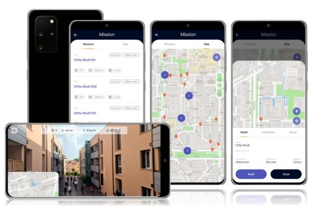
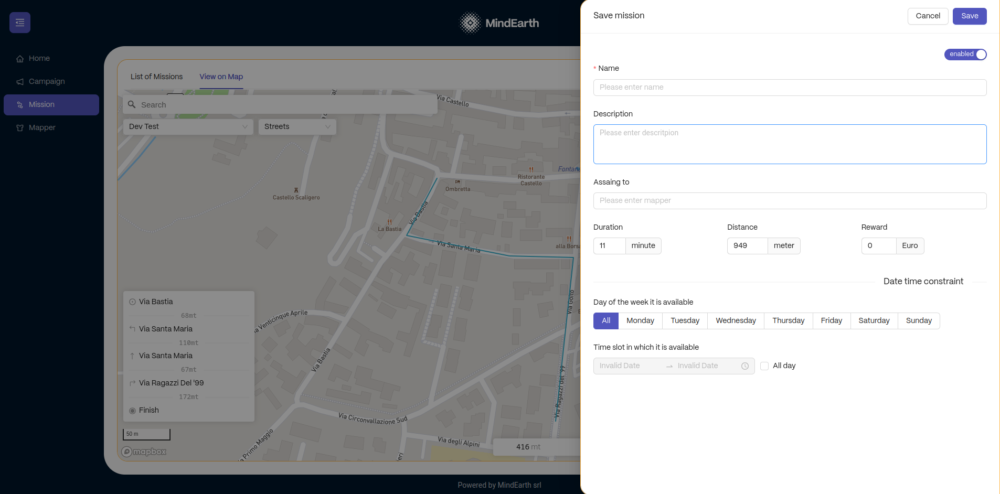

MindView
Introduction
MindView is a crowd-driven platform for collecting and uploading geo-tagged street-level imagery, utilizing built-in smartphone cameras and compatible devices like 360° cameras, car dashboards, and helmet cameras. This innovative system engages users to undertake diverse 'missions', such as traversing predefined routes, capturing specific objects, or remaining at designated locations, rewarding them based on the mission's complexity, duration, and quantity. The collected imagery undergoes processing through advanced deep-learning algorithms, extracting valuable, anonymized insights about urban environments and social dynamics. Key insights include housing and infrastructure data, green space analysis, socio-economic and cultural insights, and mobility and traffic patterns. This approach is particularly useful for maintaining up-to-date and comprehensive maps, a task that can be resource-intensive for official mapping agencies. This is particularly valuable in regions with limited or outdated official mapping sources. By harnessing the collective efforts of the community, especially in less documented or rapidly changing areas, MindView fills critical gaps in mapping data.
MindView plays an integral role in the "Data Crowdsourcing and Curation" phase of the GREENGAGE project. It addresses a key citizen science challenge in geospatial data collection and mapping, enabling users to actively contribute to the creation and improvement of spatial maps, in a way that requires no pre-existing skills or knowledge. In this way, MindView serves a wide range of beneficiaries including urban planners, disaster risk managers, territorial managers, sociologists, and environmentalists, providing invaluable data for urban development, risk assessment, and sociocultural research.
Features of MindView
MindView is built upon several key components, each playing a vital role in its functionality:
The MindEarth App (GREENGAGE Edition) This is an Android-based mobile application, currently available as a standalone APK file and soon to be launched on the Google Play Store. The MindEarth App provides users with access to a variety of missions, which are commissioned by third parties for purposes such as research, urban planning, or commercial objectives. These missions involve diverse tasks, including: - Moving from one place to another along a predetermined route, typically ranging from 500 meters to 2 kilometers. - Capturing photographs of specific objects at designated times of the day, such as shopfronts, monuments, or building facades. - Staying at a certain location for a fixed period, usually between 15 to 30 minutes.
Some missions come with strict deadlines, while others can be completed at the user's convenience. The app allows users to view details of each mission, including the location, duration, required device, deadline, and compensation. Users can select missions based on their interests and availability. For instance, they might be tasked with photographing particular street scenes at specific times or days. The app is developed on a Flutter codebase with customized views and routers, facilitating each phase of the mission from reservation to image upload. Missions are designed modularly, with the possibility of integrating custom procedures to meet specific data collection needs.

Mission Control: This dedicated back-end platform is crucial for defining, designing, and monitoring the missions available in the MindEarth App. It handles several key functions: - Generating Mapping Campaigns, each linked to a particular Area of Interest (AOI) that requires surveying. - Designing individual Missions for each Campaign, utilizing GeoJson format to outline the specific path mappers will follow. - Setting specific time constraints for each Campaign and Mission, including the start and end dates, as well as the times and dates for data collection. - Determining the effort (time and distance) and monetary reward associated with each mission. - Gathering statistics on mission completion, image collection, and survey quality for effective monitoring.

DataView DataView is an interactive set of RESTAPIs that facilitate seamless interaction with the data generated by MindView. It allows the integration of additional data sources or services into the workflow of the APIs, enhancing their overall utility. DataView provides various data export options, enabling users to download the collected data in multiple formats such as JSON, CSV, or other geo-referenced file types. This feature is particularly useful for integrating with external data processing and visualization systems. DataView is secured by a user management system overseen by a KeyCloak instance. All API and backend connections are encrypted using SSL certificates, ensuring data security. Furthermore, all collected data is stored within the private section of an AWS VPC, emphasizing data privacy and protection.
Use Case Scenario
The MindEarth App is ideally suited for scenarios requiring immediate, real-time photographic surveys of urban environments. A prime example of its application is in analyzing pedestrian traffic patterns within bustling city centers or public spaces, which aids in refining urban planning and maximizing space utilization.
To initiate a survey, the first step involves delineating the Area of Interest (AOI) to be surveyed. This includes setting specific parameters such as the time of day, day of the week, and the number of passovers necessary for enhancing the statistical reliability of the data. These parameters are established within the Mission Control platform, either directly by the MindEarth team according to client specifications or by an authorized external administrator. Once these missions are formulated and released, they are instantly accessible to users via the MindEarth App.
Upon initial launch of the app, users are prompted to either create a new account or log in with existing credentials. Subsequently, they can explore available missions nearby through a list or map interface. These missions cover various activities, ranging from navigating specific streets or areas to following designated routes with clear start and end points. Each mission is detailed with a title, description, estimated duration, distance, and a reward for successful completion. Additionally, the app notifies users of new missions in their vicinity.
Users have the flexibility to select and reserve one or more missions based on their interest. When they approach the mission's starting point, they can begin the survey by pressing the 'Start' button and then proceed as per the instructions displayed on their smartphone, including route guidance and location tracking. After completing the designated tasks and reaching the end point of the mission, users can finalize the survey.
Post-mission, the app presents an upload page where users can review and upload the captured images to MindEarth’s secure servers. The app's reward section displays the user's accumulated credits for completed tasks.
In adherence to GDPR regulations, the app employs advanced machine learning algorithms to anonymize any personal data in the images, both on the local device and subsequently in a secure AWS environment managed by MindEarth. These anonymized images contribute to aggregated data layers focusing on specific aspects, such as pedestrian flow. The image processing is performed on MindEarth's cloud backend, remaining transparent to the user.
Finally, the aggregated data and the data layers are made available to clients through DataView, a dedicated REST API that presents the database content according to a predefined schema. Users can access and interact with these APIs, which require no installation, through a public swagger interface for interactive development.